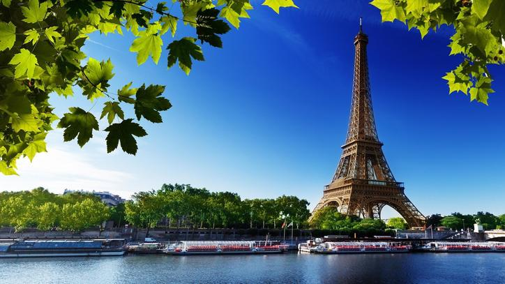
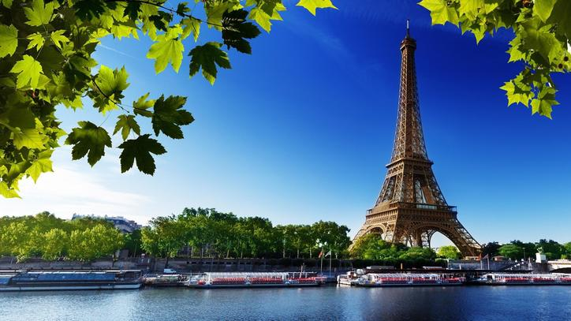

Ben
Kimim?
Uzun hikaye... ama özetlemek gerekirse;
Ben Emine , şu anda Sakarya Üniversitesinde Bilgisayar Mühendisliği birinci sınıf öğrencisiyim.Başak burcuyum ve de 1.65 metre boyundayım. Hobilerim ve ilgi alanlarım arasında kod yazmak tabii ki ilk sırada geliyor. Farklı programlama dillerini öğrenmek, algoritmaları çözmek ve yeni projeler geliştirmek benim için adeta bir oyun haline geldi. Ancak, bilgisayarın başından kalkıp gerçek dünyayı da keşfetmekten hoşlanırım. Doğa yürüyüşleri yapmak, fotoğraf çekmek ve bazen de resim yapmak, bilgisayarın monitöründen uzaklaşıp doğanın güzelliklerini keşfetmemi sağlıyor. Bununla birlikte, bilişim dünyasındaki gelişmeleri takip etmek de benim için çok önemli. Yapay zeka, nesnelerin interneti, blockchain gibi konular sürekli olarak değişiyor ve gelişiyor. Bu değişimleri takip etmek, hem bilgimi güncel tutmama hem de gelecekteki kariyerim için fırsatları değerlendirmeme yardımcı oluyor. Bu projede HTML, CSS, PHP ve JavaScript kullanarak kendimi,şehrimi ve tuttuğum takımın tanıtımını içeren interaktif bir website tasarladım.Ayrıca üst tarafta Github,Linkedin hesablarıma ve CV'me ulaşabileceğiniz kısayollar ekledim.Beni takip edebilirsiniz.
 
